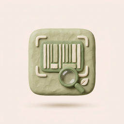

A Mediterranean-style plate is linked to better ovarian reserve and egg quality. Foods worth leaning into:
Luteal Phase Insight
Great protein balance today. This meal supports stable energy and hormone balance — particularly beneficial during the luteal phase for managing cravings and steadying blood sugar.
AI Tip · You're 38g under your protein goal. Adding an evening serving of legumes or a protein snack will help meet luteal-phase needs.